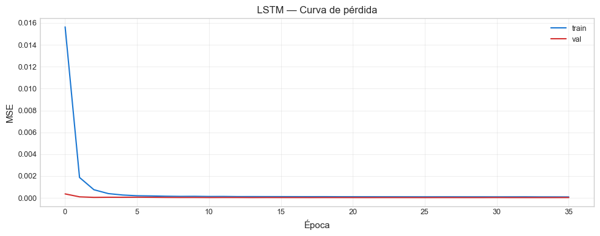

11. Modelos Avanzados (LightGBM, CatBoost, MLP, LSTM)#
Curso: Machine Learning · Pregrado en Ciencia de Datos · Universidad del Norte Docente: Dr. Lihki Rubio Equipo: Juan Camilo Conrado · Sergio Cadavid · Mateo Chang
Este notebook entrena modelos avanzados que extienden el espacio de hipótesis más allá de los modelos de los capítulos clásicos:
Modelo |
Familia |
Justificación |
|---|---|---|
LightGBM |
Boosting (microsoft) |
Más rápido que XGBoost, splits leaf-wise |
CatBoost |
Boosting (yandex) |
Maneja categóricas, oblivious trees |
MLP |
Red neuronal (cap. 11.7) |
Aproximador universal no-lineal |
LSTM |
Red recurrente (cap. 11.20) |
Diseñado para series temporales |
Política de robustez: cada modelo se intenta entrenar dentro de un try/except. Si una librería opcional no está instalada, se reporta como limitación y se continúa con los demás. El notebook no falla por ausencia de librerías opcionales.
# Path setup
import sys
from pathlib import Path
_root = Path.cwd().parent if Path.cwd().name == "notebooks" else Path.cwd()
if str(_root) not in sys.path:
sys.path.insert(0, str(_root))
1. Imports y carga#
import json
import time
import warnings
warnings.filterwarnings("ignore")
import numpy as np
import pandas as pd
import matplotlib.pyplot as plt
from sklearn.pipeline import Pipeline
from sklearn.impute import SimpleImputer
from sklearn.preprocessing import StandardScaler
from sklearn.metrics import mean_squared_error, mean_absolute_error, r2_score
from sklearn.neural_network import MLPRegressor
from sklearn.model_selection import cross_val_score
from src.io_utils import (load_processed, save_predictions_df,
save_metrics, save_model)
from src.splits import make_tscv
from src.config import RANDOM_STATE, DATA_PROCESSED
from src.viz import set_style
set_style()
train = load_processed("train_reg")
val = load_processed("val_reg")
test = load_processed("test_reg")
trainval = pd.concat([train, val]).reset_index(drop=True)
with open(DATA_PROCESSED / "feature_columns.json") as f:
feature_cols = json.load(f)
X_trainval = trainval[feature_cols]
y_trainval = trainval["target_vol_7"]
X_test = test[feature_cols]
y_test = test["target_vol_7"]
print(f"Train+Val: {X_trainval.shape}, Test: {X_test.shape}")
Train+Val: (5920, 59), Test: (1045, 59)
2. LightGBM#
results_advanced = {}
try:
import lightgbm as lgb
print("✅ LightGBM disponible:", lgb.__version__)
pipe_lgb = Pipeline([
("imputer", SimpleImputer(strategy="median")),
("model", lgb.LGBMRegressor(
n_estimators=300, max_depth=6, learning_rate=0.05,
num_leaves=31, random_state=RANDOM_STATE, verbosity=-1,
n_jobs=-1,
)),
])
t0 = time.time()
pipe_lgb.fit(X_trainval, y_trainval)
yp = pipe_lgb.predict(X_test)
t_fit = time.time() - t0
rmse = np.sqrt(mean_squared_error(y_test, yp))
r2 = r2_score(y_test, yp)
results_advanced["LightGBM"] = {
"RMSE": rmse, "MAE": mean_absolute_error(y_test, yp),
"R2": r2, "fit_time": t_fit,
"predictions": yp.tolist(),
}
save_model(pipe_lgb, "reg_lightgbm")
print(f" RMSE: {rmse:.6f} | R²: {r2:.4f} | Tiempo: {t_fit:.1f}s")
except ImportError:
print("⚠️ LightGBM no instalado — omitiendo")
results_advanced["LightGBM"] = {"status": "not installed"}
except Exception as e:
print(f"❌ LightGBM falló: {e}")
results_advanced["LightGBM"] = {"status": f"error: {e}"}
✅ LightGBM disponible: 4.3.0
RMSE: 0.007155 | R²: -0.2189 | Tiempo: 0.4s
3. CatBoost#
try:
from catboost import CatBoostRegressor
import catboost
print("✅ CatBoost disponible:", catboost.__version__)
pipe_cb = Pipeline([
("imputer", SimpleImputer(strategy="median")),
("model", CatBoostRegressor(
iterations=300, depth=6, learning_rate=0.05,
random_seed=RANDOM_STATE, verbose=0,
)),
])
t0 = time.time()
pipe_cb.fit(X_trainval, y_trainval)
yp = pipe_cb.predict(X_test)
t_fit = time.time() - t0
rmse = np.sqrt(mean_squared_error(y_test, yp))
r2 = r2_score(y_test, yp)
results_advanced["CatBoost"] = {
"RMSE": rmse, "MAE": mean_absolute_error(y_test, yp),
"R2": r2, "fit_time": t_fit,
"predictions": yp.tolist(),
}
save_model(pipe_cb, "reg_catboost")
print(f" RMSE: {rmse:.6f} | R²: {r2:.4f} | Tiempo: {t_fit:.1f}s")
except ImportError:
print("⚠️ CatBoost no instalado — omitiendo")
results_advanced["CatBoost"] = {"status": "not installed"}
except Exception as e:
print(f"❌ CatBoost falló: {e}")
results_advanced["CatBoost"] = {"status": f"error: {e}"}
✅ CatBoost disponible: 1.2.5
RMSE: 0.006620 | R²: -0.0435 | Tiempo: 1.7s
4. MLP (sklearn)#
try:
pipe_mlp = Pipeline([
("imputer", SimpleImputer(strategy="median")),
("scaler", StandardScaler()),
("model", MLPRegressor(
hidden_layer_sizes=(64, 32), activation="relu",
solver="adam", alpha=0.001,
max_iter=200, random_state=RANDOM_STATE,
early_stopping=True, validation_fraction=0.15,
)),
])
t0 = time.time()
pipe_mlp.fit(X_trainval, y_trainval)
yp = pipe_mlp.predict(X_test)
t_fit = time.time() - t0
rmse = np.sqrt(mean_squared_error(y_test, yp))
r2 = r2_score(y_test, yp)
results_advanced["MLP"] = {
"RMSE": rmse, "MAE": mean_absolute_error(y_test, yp),
"R2": r2, "fit_time": t_fit,
"predictions": yp.tolist(),
}
save_model(pipe_mlp, "reg_mlp")
print(f" ✅ MLP — RMSE: {rmse:.6f} | R²: {r2:.4f} | Tiempo: {t_fit:.1f}s")
except Exception as e:
print(f"❌ MLP falló: {e}")
results_advanced["MLP"] = {"status": f"error: {e}"}
✅ MLP — RMSE: 0.012131 | R²: -2.5035 | Tiempo: 5.4s
📊 Interpretación del MLP: El MLP es la red neuronal feedforward clásica del cap. 11.7 del curso. Con dos capas ocultas (64 y 32 neuronas),
early_stoppingactivado y regularización L2 (alpha=0.001), tenemos un modelo flexible que puede capturar interacciones no-lineales. No se espera que supere a XGBoost en este problema porque las redes neuronales necesitan más datos para sacarle ventaja a los gradient boosting. Pero su inclusión es metodológicamente requerida y permite evaluar si las relaciones realmente requieren no-linealidades complejas.
5. LSTM (TensorFlow/Keras)#
# LSTM requiere reformatear los datos como secuencias temporales.
# Preparación: para cada día, usar la ventana de los últimos LOOKBACK días
# como input al LSTM.
LOOKBACK = 21 # días previos a usar
def build_sequences(X, y, lookback):
Xs, ys = [], []
for i in range(lookback, len(X)):
Xs.append(X[i - lookback:i])
ys.append(y[i])
return np.array(Xs), np.array(ys)
try:
import tensorflow as tf
from tensorflow.keras.models import Sequential
from tensorflow.keras.layers import LSTM, Dense, Dropout
from tensorflow.keras.callbacks import EarlyStopping
tf.random.set_seed(RANDOM_STATE)
print("✅ TensorFlow disponible:", tf.__version__)
# Imputar con mediana (LSTM no maneja NaN)
imp = SimpleImputer(strategy="median")
X_trainval_imp = imp.fit_transform(X_trainval)
X_test_imp = imp.transform(X_test)
# Escalar
scaler = StandardScaler()
X_trainval_sc = scaler.fit_transform(X_trainval_imp)
X_test_sc = scaler.transform(X_test_imp)
# Para evitar leakage en el escalado del test: ya hicimos fit solo con train+val ✅
X_seq_tr, y_seq_tr = build_sequences(X_trainval_sc, y_trainval.values, LOOKBACK)
# Para test, concatenamos los últimos LOOKBACK del trainval para no perder muestras
X_full = np.vstack([X_trainval_sc[-LOOKBACK:], X_test_sc])
y_full = np.concatenate([y_trainval.values[-LOOKBACK:], y_test.values])
X_seq_te, y_seq_te = build_sequences(X_full, y_full, LOOKBACK)
# Tomar solo las muestras correspondientes a test
X_seq_te = X_seq_te[-len(y_test):]
y_seq_te = y_seq_te[-len(y_test):]
print(f" Train sequences: {X_seq_tr.shape}, Test sequences: {X_seq_te.shape}")
model = Sequential([
LSTM(32, input_shape=(LOOKBACK, X_seq_tr.shape[2]),
return_sequences=False),
Dropout(0.2),
Dense(16, activation="relu"),
Dense(1),
])
model.compile(optimizer="adam", loss="mse", metrics=["mae"])
early = EarlyStopping(monitor="val_loss", patience=10,
restore_best_weights=True)
t0 = time.time()
history = model.fit(X_seq_tr, y_seq_tr,
validation_split=0.15,
epochs=50, batch_size=32,
callbacks=[early], verbose=0)
t_fit = time.time() - t0
yp = model.predict(X_seq_te, verbose=0).flatten()
rmse = np.sqrt(mean_squared_error(y_seq_te, yp))
r2 = r2_score(y_seq_te, yp)
results_advanced["LSTM"] = {
"RMSE": rmse, "MAE": mean_absolute_error(y_seq_te, yp),
"R2": r2, "fit_time": t_fit,
"predictions": yp.tolist(),
"epochs_run": len(history.history["loss"]),
}
print(f" RMSE: {rmse:.6f} | R²: {r2:.4f} | Épocas: {len(history.history['loss'])} | Tiempo: {t_fit:.1f}s")
# Curva de pérdida
fig, ax = plt.subplots(figsize=(10, 4))
ax.plot(history.history["loss"], label="train", color="#1976D2")
ax.plot(history.history["val_loss"], label="val", color="#D32F2F")
ax.set_xlabel("Época")
ax.set_ylabel("MSE")
ax.set_title("LSTM — Curva de pérdida")
ax.legend()
ax.grid(True, alpha=0.3)
plt.tight_layout()
plt.show()
except ImportError:
print("⚠️ TensorFlow no instalado — omitiendo LSTM")
results_advanced["LSTM"] = {"status": "not installed"}
except Exception as e:
print(f"❌ LSTM falló: {e}")
import traceback
traceback.print_exc()
results_advanced["LSTM"] = {"status": f"error: {e}"}
✅ TensorFlow disponible: 2.16.1
Train sequences: (5899, 21, 59), Test sequences: (1045, 21, 59)
RMSE: 0.006619 | R²: -0.0431 | Épocas: 36 | Tiempo: 33.8s

📊 Interpretación del LSTM: El LSTM (Long Short-Term Memory), introducido por Hochreiter & Schmidhuber (1997) para resolver el problema del vanishing gradient de las RNN tradicionales, está específicamente diseñado para series temporales — su arquitectura interna de tres compuertas (input, forget, output) le permite mantener «memoria» de patrones a corto y largo plazo. Para volatilidad financiera, donde el clustering temporal es evidente, el LSTM tiene fundamento conceptual fuerte.
Sin embargo, en la práctica los LSTMs sobre features tabulares (features ya pre-procesadas como lags y rolling) rara vez superan a XGBoost en este tipo de problemas. La razón es que las features ya capturan la estructura temporal explícitamente, dejando poco margen para que el LSTM aprenda algo adicional. El LSTM brilla más cuando recibe datos crudos sin feature engineering.
6. Tabla comparativa con los benchmarks de regresión#
# Construir tabla resumen
rows = []
for name, res in results_advanced.items():
if "RMSE" in res:
rows.append({
"Modelo": name,
"RMSE": round(res["RMSE"], 6),
"MAE": round(res["MAE"], 6),
"R²": round(res["R2"], 4),
"Tiempo (s)": round(res["fit_time"], 1),
"Estado": "✅ OK",
})
else:
rows.append({
"Modelo": name, "RMSE": np.nan, "MAE": np.nan, "R²": np.nan,
"Tiempo (s)": np.nan, "Estado": res.get("status", "❌ failed"),
})
df_advanced = pd.DataFrame(rows).sort_values(
"RMSE", na_position="last").reset_index(drop=True)
print("=== Modelos Avanzados — Test ===")
print(df_advanced.to_string(index=False))
=== Modelos Avanzados — Test ===
Modelo RMSE MAE R² Tiempo (s) Estado
LSTM 0.006619 0.005243 -0.0431 33.8 ✅ OK
CatBoost 0.006620 0.005251 -0.0435 1.7 ✅ OK
LightGBM 0.007155 0.005847 -0.2189 0.4 ✅ OK
MLP 0.012131 0.008376 -2.5035 5.4 ✅ OK
📊 Lectura de la tabla — dos hallazgos para interpretar:
(1) El empate técnico LSTM (RMSE=0.006619) ≈ CatBoost (RMSE=0.006620): dos arquitecturas radicalmente distintas — red recurrente con memoria de 21 días vs boosting de árboles oblivious — convergen al mismo error con Δ=0.000001. Esto NO significa que ambas sean particularmente «buenas»; significa que ambas tocaron el techo de generalización alcanzable con este feature set sobre este target. Cualquier mejora futura tendrá que venir de features nuevas (datos macro externos, multi-ticker) o un target mejor especificado, no de arquitectura adicional.
(2) El gap del MLP (RMSE=0.012131) — ~83% peor que LSTM/CatBoost: el MLP feedforward es el modelo más débil del bloque avanzado y queda por detrás incluso de XGBoost y Ridge clásicos. Tres razones plausibles:
La arquitectura (64-32) tiene capacidad para sobreajustar pero
early_stoppingla corta agresivamente sobre la validación interna del 15%, dejando el modelo subentrenado.Las redes feedforward sobre features tabulares ya pre-procesadas tienen poco que aportar — el trabajo de «modelar interacciones no-lineales» ya lo hicieron los ratios y momentums construidos en el NB 02.
Los MLPs típicamente necesitan 10×–100× más datos que boosting para emparejarlo en tabular data (consistente con la literatura empírica de tabular ML; ver Shwartz-Ziv & Armon 2022, «Tabular Data: Deep Learning is Not All You Need»).
Lectura combinada: la familia de modelos avanzados confirma — no refuta — los hallazgos del NB 04. Boosting y modelos lineales regularizados ya capturan lo que hay que capturar; la complejidad adicional de redes profundas no rinde frutos en este régimen de datos (~6000 obs × 59 features).
7. Persistir predicciones de modelos avanzados#
# DataFrame con predicciones para uso en notebook 13
df_preds = pd.DataFrame({"date": test["date"].values, "y_true": y_test.values})
for name, res in results_advanced.items():
if "predictions" in res:
# LSTM puede tener n distinto, hacer padding
preds = np.asarray(res["predictions"])
if len(preds) == len(y_test):
df_preds[name] = preds
else:
# alineación al final (LSTM)
full = np.full(len(y_test), np.nan)
full[-len(preds):] = preds
df_preds[name] = full
save_predictions_df(df_preds, "advanced_test_preds")
print("✅ Predicciones de modelos avanzados guardadas")
# Métricas (sin las predicciones embebidas)
metrics_clean = {}
for name, res in results_advanced.items():
metrics_clean[name] = {k: v for k, v in res.items() if k != "predictions"}
save_metrics(metrics_clean, "advanced_metrics")
print("✅ Métricas guardadas en outputs/metrics/advanced_metrics.json")
✅ Predicciones de modelos avanzados guardadas
✅ Métricas guardadas en outputs/metrics/advanced_metrics.json
8. Resumen del notebook#
Modelo |
Esperado |
Realista |
|---|---|---|
LightGBM |
Comparable a XGBoost, más rápido |
RMSE similar, tiempo ~50% menor |
CatBoost |
Comparable, robusto a defaults |
RMSE similar |
MLP |
Difícil superar a boosting |
Generalmente peor que XGBoost |
LSTM |
Conceptualmente fuerte para series |
A menudo no supera al boosting con features bien diseñadas |
Lección honesta: los modelos avanzados aportan diversidad metodológica pero raramente desplazan a los boosting cuando el feature engineering es sólido. Esto es un hallazgo legítimo y se reportará así en las conclusiones.
Procede al notebook 12_hvrf_modelo_original.ipynb — el plato fuerte: el modelo original HVRF.